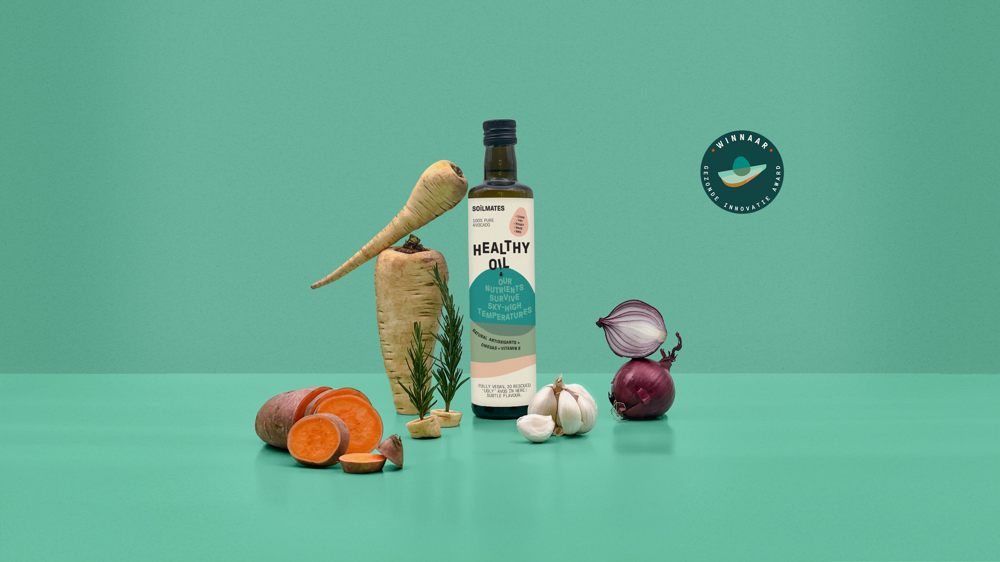
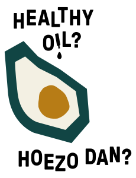
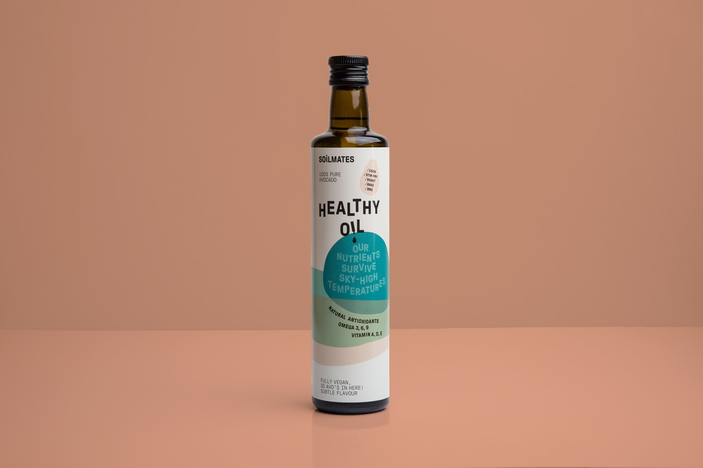
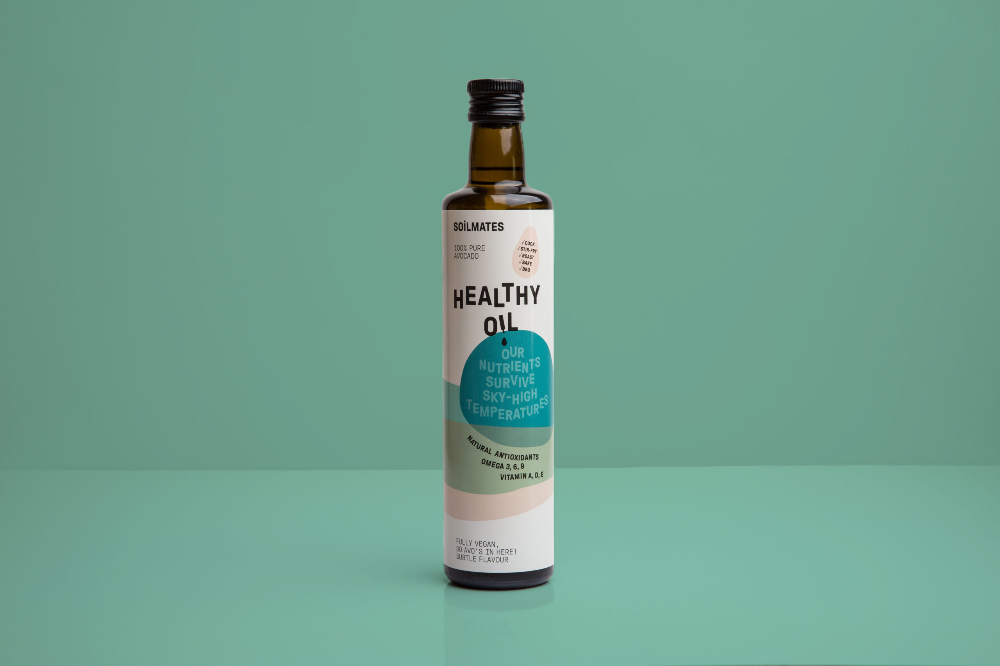

Welkom bij Soilmates
Hallo jij Soilmate!
Wij zijn Soilmates. Een kleine groep mensen met grote dromen. Want weet je, waar sommigen lelijk zien, zien wij een kans… Soilmates redden afgekeurde avocado’s – die te ‘ugly’ worden bevonden voor de supermarkt – en ‘squeeze the health out of them’. Wij geven deze lelijkerds een nieuw leven door er de gezondste bakolie van te maken. Geen voedselverspilling, daar gaat het om.
Wat ons betreft is iedereen een Soilmate. Ik, zij, wij. Eén groep, met één missie: een gezond lichaam op een gezonde aarde. Soilmates are all of us. En omdat jij nu hier bent is de kans groot dat jij ook een Soilmate bent.
 Producten
-
Care about eating healthy without sacrificing taste?
 Click here -
Care about sustainability and fighting food waste?
 Click here